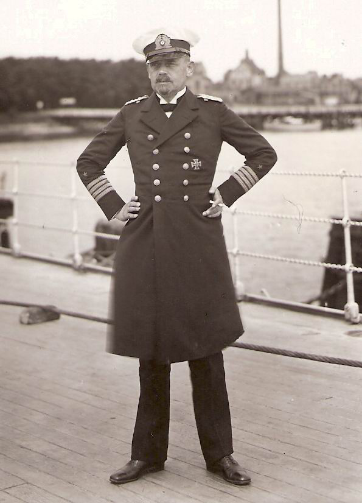
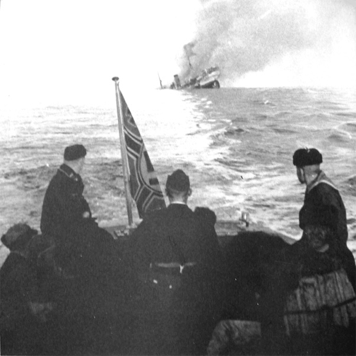
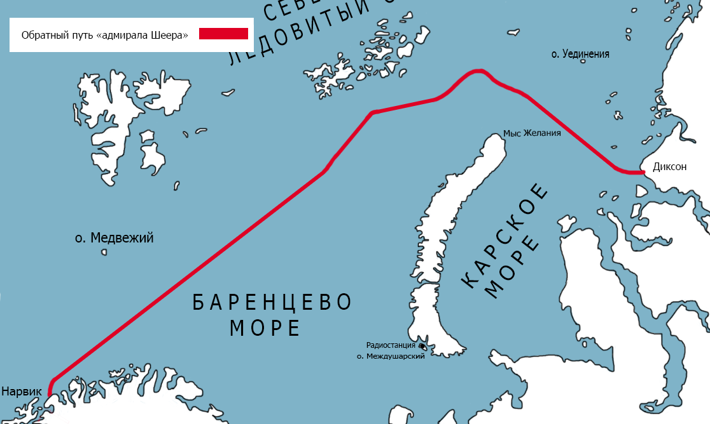

Германия в Арктике.
Военное присутствие Германии в Арктике началось в первые годы XX века и ускорилось во время Первой мировой войны, когда у северного берега Норвегии был создан морской путь, соединяющий Россию и Великобританию, союзников Энтанте. Корабли Императорского флота Германии Берлин, Гросс Курфурст, Метеор, а также несколько подводных лодок предприняли попытку провести первые рейды против кораблей союзников. Чтобы облегчить это вмешательство, в 1915 году немцы построили хранилище на острове Поной у Кольского полуострова, а в 1916 году основали первую подводную базу в проливе Маточкин Шар, разделяющую острова Новая Земля. В 1916 году одна из подводных лодок "Новая Земля", U-196, вошла в Кольский залив и обстреляла Александровск (ныне Полярный), другая подводная лодка 13 сентября 1916 года потопила два норвежских и один британский торговые суда в Баренцевом море.
Цеппелин LZ-127 в полете. Международная экспедиция дирижаблей под руководством Германии 1931 года открыла новые возможности для исследования и составления карт Арктики.
После трудных послевоенных лет немцы вернулись в Арктику в некотором стиле в 1931 году, когда Цеппелин LZ-127, принимающий международную исследовательскую группу, путешествовал по маршруту 13000 миль Берлин - Ленинград - Архангельск - Земля Франца-Иосифа - Северная Земля - Диксон - Мыс Желания - Колгуев - Архангельск - Берлин. Даже если это предприятие имело международный статус под эгидой Аэроарктического общества, основанного знаменитым полярным исследователем Фритьофом Нансеном, команду Цеппелин возглавлял немец Хуго Эккенер, состоявший в основном из немецких специалистов, которые составляли подробные планы и косые фотографии наиболее отдаленных и ранее недоступных районов Советской Арктики. В последний лаг этого грандиозного полета LZ-127 должен был прибыть в Ленинград и передать все фотоматериалы для обработки, но вместо этого вылетел прямо в Берлин. Эккенер привел плохие погодные условия в качестве причины. Вскоре советское посольство в Берлине получило извинения от немцев, которые сообщили советским представителям, что из-за ошибки в процессе разработки все фотографии и фильмы были уничтожены.
В 1932 году немецкие исследователи посетили Землю Франца-Иосифа на ледоколе «Малыгин», а в 1933–1937 годах немецкие торговые корабли регулярно заходили в советские порты на реках Енисей и Обь. Кригсмарин не отставал. Крейсер Кенигсберг посетил Баренцево море в 1936 году, а год спустя тот же маршрут был выбран крейсером Кельн. В 1937 году немецкие ученые, участвующие в исследовательском проекте «Новая Земля», совершили поездку на ледоколе «Вологда» и посетили пролив Маточкин Шар, Черную и Белушью Губу, Малые Кармакулы, Матушиху и метеостанцию на мысе Желания. Все эти топонимы снова всплывают во время операции «Вундерланд».
В июне 1939 года советская гидрографическая экспедиция на корабле Мурманец вошла в Карское море. Как и в случае поездки Цеппелина, она была сильно набита многочисленными научными сотрудниками, связанными с Ленинградским Арктическим институтом. Исследователи свободно говорили по-немецки и работали в отдельном охраняемом отсеке, используя современное немецкое эхолот и оборудование для регистрации глубины моря. Мурманец посетил Порт-Диксон для «полевой экскурсии», а также доставил исследовательские группы на острова Норденшольд, Свердруп, Сидоров, Белый, Вилькицкий и Геркулес.
В октябре 1939 года, сразу после подписания нацистско-советского неагрессивного пакта, при котором изначально Германия планировала напасть на СССР ( подписанием неагрессивного пакта германия устранила угрозу войны нафронта) и начала Второй мировой войны, советское правительство разрешило немцам создать базу Кригсмарине к западу от Мурманска в Великой Западной Лице с целью развития и защиты возможных морских путей между Германией и Японией, а также для поддержки германской военно-морской деятельности в западной части Арктики. Эта база функционировала до 5 сентября 1940 года, когда глава адмирала Кригсмарине Редер решил перевести основную военно-морскую базу Германии в недавно оккупированную Норвегию. Однако «Базис Норд» был только закрыт, но не демонтирован. Даже в июне 1941 года на нем все еще находилось более 100 навесных тракторов и грузовиков, сотни тонн взрывчатых веществ на складе, а также консервы, предположительно оставленные для немецкой Гебиргсъегербригады горных пехотных частей.
* Действительно, 3 июля 1941 года батальон немецкой горной пехоты пересек реку Великая Западная Лица и отбил Базис Норд, но через 3 дня был отброшен советской контратакой. Советы быстро вывезли грузовики и горнодобывающее оборудование и взорвали некоторые подземные сооружения, но хранилища продовольствия были сохранены в целости и содержали, по сообщениям, достаточно продовольствия для снабжения двух советских дивизий до конца 1941 года.
После создания «Базис Норд» Кригсмарин обдумывал свой следующий шаг - фактическое путешествие немецкого военного корабля по Северному морскому пути. Повод для этой поездки был найден в ближайшее время. 2 января 1940 года адмирал Редер сообщил Гитлеру, что 35 немецких кораблей застряли в портах Восточной Азии и должны были быть спасены от союзников, и для этого было бы очень желательно получить разрешение от Советов, чтобы позволить немецкому рейдеру следовать за Безопасный Северный морской путь от Мурманска до Берингова пролива. Разрешение было предоставлено, и эта важная миссия была успешно проведена немецким рейдером Кометом в августе-сентябре 1940 года при поддержке отдельных советских ледоколов. Комета несла не только скрытое оружие и негабаритный экипаж из 270 человек, но и оборудование, позволяющее ей менять силуэт, устанавливать дополнительные мачты, изменить высоту и форму дымовых труб и грузовых вышек и правдоподобно выдать себя за, например, советского ледокола "Дежнев", который в то время был отправлен в другое место. Комета посетила немецкий «Базис Норд» в Великой Западной Лице и, прежде чем отправиться на восток к Берингову проливу, она высадила разведывательные отряды на берегу Новой Земли, на островах Норденшельд, и занималась мониторингом и расшифровкой радиопотока между советскими кораблями. Все эти предварительные действия стали основой для первой крупной германской военно-морской операции в Карском море.
Разработка операции «Вундерланд»
В начале Великой Отечественной войны Гитлер надеялся на быструю победу над СССР и деятельность Кригсмарине в Арктике была сильно ограниченной. Обстановка быстро поменялась, когда союзники по антигитлеровской коалиции начали поставлять в высшей степени необходимые оборудование и материалы для СССР. Гитлер отдал приказ сосредоточить все имеющиеся ресурсы вдоль побережья Норвегии, против поставок союзников. Апогеем данной стратегии стало потопление в начале июля 1942 года 24 транспортов конвоя PQ-17, а в сентябре 13 судов конвоя PQ-18. Сама вероятность союзных поставок западными арктическими маршрутами была поставлена под сомнение, во всяком случае на протяжении арктического дня.
Успех разгрома конвоев PQ-17 и PQ-18 воодушевил немцев, и они активизировали исследование следующего плана в Арктике — операции «Вундерланд», приказ о начале проектирования которого был отдан адмиралом Рольфом Кальсом ещё 5 мая 1942 года.
Ральф Кальс

Ральф Кальс
Так как Красноярск к началу Великой Отечественной войны являлся крупной узловой железнодорожной станцией, и в нём находился крупнейший в Сибири железнодорожный мост, который связывал Восток с Западом страны, также в городе располагался промежуточный аэропорт, имевший большое значение при перегоне самолетов из США. Гитлеровское командование, осведомленное о стратегической важности региона, разработало план операции «Вундерланд». Согласно этому плану, один из крейсеров вермахта должен был Северным морским путем через устье Енисея зайти в поселок Диксон, уничтожить располагавшуюся там полярную радиостанцию, затем подняться по Енисею до порта Дудинка и уничтожить Норильский комбинат. Большую ставку гитлеровское командование делало на помощь освобожденных заключенных Норильлага. План предусматривал уничтожение в Красноярске железнодорожного моста через Енисей и ряда других важных стратегических объектов. Операция «Вундерланд» рассматривалась как предшествующий шаг установления полного контроля над западной частью русской Арктики.
Хуберт Шмудт
Хуберт Шмунд
-
шеер
-
люпер
-
хиппер
Управлять подготовкой и проведением операции «Вундерланд» было доверено адмиралу Хуберту Шмундту, основавшему собственный план на убеждении в том, что арктические конвои фактически не охраняются, сопровождением этих конвоев занимаются ветхие ледоколы, вооруженные 1-2 малокалиберными орудиями и поэтому основную роль в операции «Вундерланд» Шмундт отвёл тяжёлым крейсерам «Адмирал Шеер», «Люцов» и «Адмирал Хиппер», которые имели бы возможность нападать конвои в Карском море с востока и с запада, с относительной безнаказанностью, обладая превосходящей огневой силой и мощной поддержкой со стороны разведки гидросамолётов и подводных лодок.
Для нанесения наибольшего ущерба как можно быстрее немецкие корабли должны были нападать в одно и то же время, в точке, где конвои, идущие с запада на восток и с востока на запад, встречаются друг с другом, предпочтительно в тесном проливе Вилькицкого, в условиях предотвращающих маневрирование или рассредоточение конвоя, а также в районе достаточно удалённом, исключающем вмешательство советских самолётов. Разгромив конвои, немецкие корабли могли атаковать ключевые порты Северного морского пути, повреждая портовую и иную инфраструктуру и эффективно парализуя всё движение в арктических водах, по крайней мере, до конца навигации 1942 года. Но вследствие недостаточности разведданных проектировщикам Кригсмарине, как правило, приходилось опираться на собственные догадки. Их основная проблема была связана с Новой Землёй. Они должны были проверить, во-первых, как конвои обходят данный громадный барьер, делящий Баренцево и Карское моря: через пролив Карские ворота либо мыс Желания, во-вторых, связаны ли данные 2 маршрута с проливом Вилькицкого кратчайшим путем, либо суда заходят в Диксон. В последствии кропотливого анализа они разработали правдоподобное объяснение: главный маршрут для конвоев был наиболее коротким, вдоль западного побережья Новой Земли. Хотя данный вывод, как потом выяснилось, оказался неверным. Русские, давно ходившие Северным морским путём, располагали наиболее практическими умениями и знали, что летом ледовая ситуация не настолько серьезна и более прогнозируема вдоль материкового берега, чем вдоль северных берегов Новой Земли, находящихся слишком близко к границе вечного льда. Данному ложному выводу специалистов Кригсмарине предначертано было быть главной причиной краха операции «Вундерланд». Не говоря уже о том, что, в начале июня, несмотря на высшую степень готовности, Шмундт был вынужден минимизировать масштаб операции. Во время атаки на конвой PQ-17, «Люцов» во время операции «Ход конём» наскочил на подводную скалу, получил пробоину и нуждался в ремонте, а «Адмирал Хиппер» должен был остаться в Нарвике и поджидать конвои, идущие с запада, потому единственным кораблём способным участвовать в «Вундерланд» оказался «карманный линкор» «Адмирал Шеер», который имел полное водоизмещение 13 700 тонн. Численность экипажа 926 человек. Оперативная разведка возлагалась на подводные лодки.
Подводный этап
Операция «Вундерланд» стартовала за 3 недели до выхода крейсера «Адмирал Шеер» из Нарвика. Подготовительный рубеж проводили немецкие подводные лодки, особое внимание которых было сконцентрировано на русской военно-морской базе в заливе Белушья Губа, подобранной не случайно. Германские подводники превосходно знали данный регион, нередко подбирали его для отдыха и дозаправки, а 1941 году даже возвели всепогодное укрытие и установили радиостанцию на острове Междушарский.
Согласно проекту Шмундта, для операции были зарезервированы 7 подлодок, 3 из которых предназначались для сбора данных по ледовой ситуации на севере и северо-востоке от Новой Земли, а 4 - должны были быть щитом для участвующих в операции крейсеров от атак советского Северного флота с запада, а еще для проведения диверсионных рейдов. Хотя основная задача этого предварительного шага была в отвлечении советских сил ВМФ из Карского моря.
1-ая акция случилась 27 июля 1942 года, когда немецкая подводная лодка U-601 совершила нападение на Малые Кармакулы, около залива Белушья Губа, и обстреляла 2 стоящих на якоре гидросамолёта, 3 жилых здания и 2 склада.
1 августа она торпедировала русское торговое судно «Крестьянин», гружённое углём, которое приближалось к Белушьей Губе в отсутствии сопровождения.
8 августа U-601 зашла в Карское море с задачей по сбору информации о русских конвоях, ледовых и метеоусловиях и заняла основную позицию у северной оконечности Новой Земли.
14 августа U-251 также вошла в Карское море и заняла позицию в районе Диксона.
U-456 охотилась в проливах Карские ворота и Югорский Шар, готовясь осуществить диверсионные рейды по объектам вдоль западных берегов Новой Земли, чтобы привлечь как можно больше внимания и отвлечь командование Северного флота от прогнозируемых основных событий в Карском море и проливе Вилькицкого.
17 августа, необыкновенно страшный след в военно-морской истории Арктики оставила U-209. В 7.00, в 2 милях от северного берега острова Матвеев, неподалеку от западного входа в пролив Югорский Шар, U-209 заметила медленно передвигающиеся суда, караван НКВД, осуществлявший транспортировку 300 заключённых в лагеря ГУЛАГа норильской концентрации. Оставаясь погружённым на перископной глубине, командир U-209 видел, что суда шли в отсутствии сопровождения военных кораблей. U-209 возникла на поверхности и практически в упор начала обстрел и торпедирование беззащитных судов. Всего из 328 человек были спасены 23. Никто из заключённых и охранников не уцелел.
На следующий день, 18 августа, Архангельский партийный комитет узнал о трагедии и потребовал от командования Северного флота остановить немецкие диверсии. Несколько ошеломляющих нападений и наглых демонстраций немецких подводных лодок побудили командование Северным флотом укрепить защиту берега Белушьей Губы артиллерийскими батареями с Диксона. Немецкая стратегия отвлечения русских войск из Карского моря сработала, так как и была задумана.
Разведки
В августе немецкая разведка получила информацию, что в начале июля 16 боевых американских кораблей и 20 торговых судов прибыли в Петропавловск-Камчатский. 26 июля конвой вышел из Петропавловска и 1 августа прошёл Берингов пролив. По утверждению японской службы мониторинга радио-трафика, конвой содержал 19 торговых судов в сопровождении 3 ледоколов. По немецким оценкам конвой имел возможность пройти пролив Вилькицкого и войти в Карское море 22 или же 23 августа.
Данные оценки стали ещё одним образцом безуспешной аналитики. В первую очередь, вследствие очень жестокой ледовой обстановки в море Лаптевых, конвой перемещался слишком медлительно и действительно достиг пролива Вилькицкого не 22 августа, а 22 сентября, ровно через месяц, после того как «Адмирал Шеер» ушёл. Во-2-х, в данном конвое, названом ЭОН-18, было всего 6 торговых судов, 2 ледокола и 3 военных корабля: лидер эскадренных миноносцев «Баку», эсминцы «Разумный» и «Разъярённый», которые были переданы с Тихоокеанского флота в состав Северного. Хотя боевые корабли не сумели бы оказать отпор в случае нападения противника, потому что все пушки и торпедные пусковые установки с боеприпасами, были перегружены на одно из торговых судов конвоя.
Главным для принятия решения о начале проведения надводной стадии операции явилось сообщение, полученное 15 августа, в котором было сказано, что самолёты — разведчики Люфтваффе выявили большой конвой, вышедший из Архангельска на прошлой неделе и шедший на восток, явно к проливу Вилькицкого, который он должен будет пройти также 22-23 августа. Оба конвоя сопровождали почти все ледоколы, которые в своём распоряжении имело Главное управление Северного морского пути. Данные конвои будут представлять собой 1 очень большую цель, в совокупной сложности более 50 судов. В случае, если Кригсмарине нужно нанести удар, практически парализующий Северный морской путь, то пришло время действовать в данный момент.
«Адмирал Шеер» вступает в бой
Меендсен-Болькен
Перед началом операции Меендсен-Болькен, не так давно назначенный капитаном «Адмирала Шеера», получил указания по условиям плавания в Карском море и тактике ВМФ СССР от прежнего военно-морского атташе при посольстве Германии в Советском Союзе.
Поскольку достаточно многое зависело от четкой расшифровки русского радио-трафика, к экипажу «Адмирала Шеера» присоединилась группа радиоразведки, большая часть членов которой разговаривали на русском языке.
Поскольку ледовые и погодные условия оставались основной нерешённой задачей, не считая подводных лодок и целой сети метеостанций, простирающейся от Шпицбергена до устья реки Лены, было решено задействовать в операции 2 гидросамолёта Блом унд Фосс BV-138, способные оставаться в воздухе на протяжении 12 часов без дозаправки. Эта разведка была нужна для сбора разведывательной и метеоинформации вдоль наиболее главных судоходных маршрутов. Впрочем, прямо перед началом операции оба BV-138 вышли из строя и восстановлению не подлежали.
Тем не менее, в докладе, переданном U-601 в штаб-квартиру Кригсмарине в Нарвике, 15 августа, ледовые условия выглядели перспективными, и немцы решили продолжить «Вундерланд». 16 августа, в 15.00, «Адмирал Шеер» в сопровождении эсминцев Z16 «Фридрих Экольдт» , Z15 «Эрих Штайнбринк» и Z4 «Рихард Байцен» вышел из Нарвика. Достигнув в полном радиомолчании острова Медвежий, капитан рейдера отпраздновал со свитой данное событие и направил крейсер полным ходом на восток. 17 августа эсминцы охранения повернули назад, а крейсер продолжил путь на север. 18 августа с «Адмирала Шеера» было замечено одинокое торговое судно. Это был советский теплоход «Фридрих Энгельс», следовавший рейсом из Нью-Йорка через Исландию на Диксон. «AдмиралШеер» не атаковал, чтобы не обнаружить преждевременно своё присутствие.
Туманы и невысокая облачность благоприятствовали проходу через Баренцево море, рейдер вошёл в Карское море, и на воду спустили гидросамолёт Арадо Ar 196. Пришло время начать разведывательные полёты. В 23:40, «Адмирал Шеер» удачно встретился с U-601 и получил обновленную информацию о ледовой ситуации. Но, командир U-601 сообщил о том, что все еще, в отличие от немецких надежд, он не наблюдал практически никакого судоходства вдоль западного побережья Новой Земли.
Меендсен-Болькен принял решение проверить обстановку самостоятельно. Он направил крейсер на юго-запад к мысу Желания, после этого на восток к острову Уединения, вдоль предполагаемого маршрута русских кораблей, хотя скоро рейдер был вынужден передвигаться вокруг 2-ух наибольших ледяных полей и, в конечном счете, был остановлен сплошной стеной льда. Информация U-601 была правильной: данный регион чрезвычайно тяжёл для судоходства. Стратегия, предусмотренная персоналом Кригсмарине, не оправдалась, и весь день был потрачен без какой-либо пользы. Хуже того, вышел из строя компас Арадо Ar 196 и ещё один день был потрачен для ремонта.
После выхода из забитого льдом района на востоке, «Адмирал Шеер» повернул на юг и в вечерние часы, 20 августа, встретился с другой подводной лодкой, U-251, которая также до сих пор не встречала советских судов. У Меендсен-Болькена остался только один реальный вариант, следовать вдоль береговой линии полуострова Таймыр, достигнуть пролива Вилькицкого и дожидаться конвой, надеясь на скорое его прибытие.
Данное решение оказалось правильным. В полдень 21 августа наблюдатель с AradoAr196 наконец сообщил, что долгожданный конвой расположен всего в 60 милях от текущей позиции «Адмирал Шеер» к востоку от островов Мона, и медленно движется с юго-запада почти точно в направлении крейсера. По словам наблюдателя в конвое шли 9 торговых судов и 1 большой ледокол.
Если о количестве кораблей в конвое наблюдатель сообщил точно, то в направлении он ошибся. Немцы ждали конвой с запада, из Петропавловска, и экипаж Арадо Ar 196, для того чтобы избежать обнаружения, наблюдал суда очень короткое время и на максимальной дальности. В результате оба пилота не смогли определить точный курс и произвели необъективную информацию. На самом деле, конвой, замеченный с Арадо Ar 196, шёл на восток, а не на юго-запад. Это был тот же конвой, который оставил Архангельск 8 августа и наблюдался самолётами Люфтваффе 15 августа. После короткой стоянки в Белушьей Губе, торговые суда, 2 танкера и ледокол «Красин», 18 августа прошли пролив Карские ворота, посетили Диксон и пошли на восток. Позже к ним присоединился ледокол «Ленин» и британский танкер «Хоуп Маунт». Назвать эту группу судов конвоем будет преувеличением, поскольку в отличие от обычной практики он не был защищён каким-либо настоящим боевым кораблём, и, если бы немцы решили его преследовать, то были бы потоплены все или большинство судов. Вместо этого Меендсен-Болькен решил занять позицию у банки Ермака, готовясь встретить конвой после того, как он пройдёт острова Мона и окажется перед дулами орудий «Адмирала Шеера».
Немцы провели всю ночь в напрасном ожидании. Наконец, служба мониторинга радио-трафика сообщила, что суда медленно уходят от засады в северо-восточном направлении. Только тогда Меендсен-Болькен понял свою ошибку и приказал преследовать конвой, но драгоценное время уже было упущено.
В утренние часы 22 августа «Адмирал Шеер» достиг архипелага Норденшельда, и Арадо Ar 196 вновь поднялся в воздух. Опять не удалось найти конвой, и экипаж гидросамолёта решил исследовать ледовую обстановку в направлении пролива Вилькицкого. Между тем немецкая радиослужба нашла ключ для одного из советских сообщений. В нём сообщалось, что конвой движется на северо-восток со скоростью 5 узлов и собирается войти в пролив Вилькицкого.
23 августа Арадо Ar 196 снова увидел неуловимый конвой, который расположился на якорной стоянке возле острова Хелланд-Хансен. Следующие два дня «Адмирал Шеер» продолжал двигаться на восток вдоль относительно узкой полосы воды, иногда составляющей всего несколько миль в ширину.
25 августа в 5.30 Арадо Ar 196 совершил свой одиннадцатый, последний полёт. Во время жёсткой посадки самолёт разбился о льдину. Без этого помощника все надежды на обнаружение и атаку конвоя быстро исчезли, и капитан озвучил отступление. Если бы только он знал, что русские корабли были буквально загнаны в угол: конвой стоял на месте, так как суровая ледовая обстановка в море Лаптевых полностью блокировала путь на восток.
Маршрут на запад для «Адмирала Шеера» был гораздо легче, на этот раз вода была почти свободна ото льда. К 11.00 крейсер прошёл архипелаг Норденшельда и достиг острова Белуха. В 12.00 дозорный сообщил, что замечен корабль противника - старый ледокольный пароход.
Потопление «Александра Сибирякова»
«Александр Сибиряков»
Это был «Александр Сибиряков», который был приписан к Беломорской военной флотилии и имел вооружение: два 76-мм и два 45-мм орудия и пулемёты, совершавший рейс из Диксона на Северную Землю с грузом горючего, провианта и материалов для обеспечения полярных станций. На борту находились гражданский и военный экипаж, а также пассажиры — строители и персонал полярных станций, всего около 100 человек.
В этот момент капитан рейдера столкнулся со сложной дилеммой. Он мог открыть огонь сразу и быстро затопить старый ледокол, но теперь, когда Арадо Ar 196 был потерян, он отчаянно нуждался в информации о ледовой обстановке и движении конвоев, которую мог бы получить от русских. «Адмирал Шеер» повернул в сторону ледокола, чтобы затруднить опознание своего силуэта, и определил себя как USS Тускалуса, подняв флаг американского флота.
Но этот трюк не удался. То ли из-за ошибки сигнала с немецкой стороны, то ли из-за непонимания с русской, но связист «Александра Сибирякова» принял название судна не как USS «Tuscaloosa», а как японское «Siuasima».
С крейсера было отправлено первое сообщение на русском языке: «Кто ты и куда идёшь?». Через минуту еще одно: «Доложить ледовую обстановку в проливе Вилькицкого». С ледокола на Диксон отправили радиограмму, что неизвестный крейсер поднял американский флаг и быстро приближается. Диксон тут же ответил, что никаких американских или японских кораблей в этом районе нет, судно может быть только фашистским рейдером, и «Александр Сибиряков» должен действовать в регламенте боя.
Тонущий «Александр Сибиряков»
Только сейчас, через девять дней после начала «Вундерланд» русские узнали о немецкой операции. Чтобы подтвердить свои намерения, рейдер произвёл один холостой выстрел. В 13.40 Диксон получил радиосообщение: «Вражеский рейдер движется на нас, мы принимаем бой». Десятки арктических станций стали вызывать «Александра Сибирякова», но корабль молчал, так как мощный радиопередатчик «Адмирала Шеера» блокировал все сообщения. В 14.07 Диксон послал радиограмму для всех арктических станций: «Фашистский крейсер в Карском море, атакован ледокол „Александр Сибиряков“. Всем судам немедленно остановить радиообмен». Всем конвоям было дано указание держаться подальше от опасной зоны или прибыть в порты под защиту береговой артиллерии.
А в это время, ведя огонь по крейсеру и прикрываясь дымовой завесой, «Александр Сибиряков» полным ходом шёл к острову Белуха. Капитан корабля Анатолий Качарава пытался выиграть как можно больше времени, чтобы спасти экипаж и пассажиров парохода.

25 августа, 15:00. Сибиряков затоплен и идет вниз. Фото сделано с « Адмирала Шеера». На переднем плане видны несколько выживших из «Александра Сибирякова», некоторые все еще носят спасательные жилеты.
При первом залпе немцы немного ошиблись в расчёте. Следующий залп «Адмирала Шеера», в 13:53, попал точно в цель: 305-килограммовый снаряд ударил по платформе кормовой пушки. Кормовая пушка была уничтожена сразу, расчёт орудия погиб при взрыве. Третий залп, на этот раз осколочно-фугасный, снова попал в ледокол. Горячие осколки пронзили бочки с бензином, стоящие на палубе, многие взорвались, быстро распространяя огонь. Четвёртый залп стал смертельным. Массивные снаряды прошли через палубу и взорвались ниже, повредив паровые котлы и пробив дыры в корпусе корабля. Двигатель парохода прекратил работу и корабль остановился. Огромный столб дыма полностью закрыл судно.
За агонией своей жертвы, на «Адмирале Шеере» следили более 20 минут, а когда огонь начал стихать, обнаружили, что пароход, явно набравший много воды, до сих пор отказывался тонуть. Чудом уцелевшая последняя пушка продолжала стрелять. Меендсен-Болькен решил не отказывать себе в удовольствии и в 14:28 приказал произвести последний залп, в упор, с расстояния всего 2,2 миль. В общей сложности, немецкие артиллеристы произвели 6 залпов 27 снарядами. Через несколько минут, в 15:00, «Александр Сибиряков» был затоплен своим экипажем.
Между тем, всё ещё надеясь получить необходимую информацию, немцы решили захватить выживших и спустили спасательный катер, который быстро приблизился к шлюпке с уцелевшими русскими. По данным немецких источников, некоторые моряки отказались быть спасёнными немцами и прыгнули за борт, оставшись в ледяной воде, кочегар Николай Матвеев был застрелен. Несколько немцев прыгнули в лодку и, избивая прикладами, заставляли выживших перейти на борт немецкого катера. Всего, от первоначальных 99 человек, немцами были подобраны 22, включая тяжелораненого капитана Качараву. Примерно через час после начала боя «Александр Сибиряков» затонул. Когда немцы удалились, кочегар Павел Вавилов, покинувший судно одним из последних, сумел добраться до покинутой шлюпки и достичь острова Белуха. Там он провёл более месяца, прежде чем был замечен с парохода «Сакко». 29 сентября Вавилов был спасён гидросамолётом Ивана Черевичного. Остальные члены экипажа и пассажиры погибли.
Бомбардировка Диксона
Бдительность «Александра Сибирякова» привела к тому, что присутствие германского надводного корабля в Карском море стало известно советской стороне, хотя «Адмирал Шеер», очевидно, не был идентифицирован: в перехваченных сообщениях речь шла о «вспомогательном крейсере». Патрулирование района между мысом Желания и островом Диксон, предпринятое «Адмиралом Шеером» 25—26 августа, не принесло никаких результатов. Опять были встречены труднопроходимые льды.
Меендсен-Болькен принял решение перейти к выполнению запасной задачи — атаковать один из советских портов. В качестве такового был выбран порт Диксон, а не Амдерма, поскольку данные радиоперехвата указывали, что именно в Диксоне находится командный центр, где можно было захватить ценные сведения. С этой целью планировалась внезапная атака с высадкой десанта численностью до 180 человек. Предполагалось, что гарнизон Диксона составляет около 60 человек.
Но реакция советского командования на сообщение «Александра Сибирякова» оказалась запаздывающей и несогласованной. Неразбериху усиливали сообщения о появлении вражеских надводных кораблей в один и тот же день 25 августа в трёх разных местах: у острова Белуха, где погиб «Сибиряков»; у мыса Желания, где была обстреляна метеостанция; и у мыса Челюскин, недалеко на восток от которого в это время находился «3-й арктический конвой». Последние два сообщения были ошибочными (обстрел метеостанции на самом деле совершила подводная лодка U-255). В результате, активная подготовка к отражению возможного нападения противника на Диксон началась лишь вечером 26 августа.
Схема пути, пройденного «Адмиралом Шеером» до острова Диксон
В середине августа командование Беломорской военной флотилии распорядилось перебросить артиллерийские батареи с Диксона в Белушью Губу на Новой Земле в связи с активностью подводных лодок и авиации противника в этом районе. Батареи были уже демонтированы и частично погружены на баржу, поэтому отданный 26 августа адмиралом Г. А. Степановым приказ об их восстановлении не мог быть быстро исполнен. Два 152-мм орудия, составлявшие батарею № 569, были ещё не погружены. Благодаря инициативе командира батареи, лейтенанта Николая Михайловича Корнякова, они были установлены у причала и снабжены боеприпасами. Личный состав батареи был доукомплектован добровольцами.
В течение дня 26 августа в порт Диксон прибыли ледокольный пароход «Дежнёв» (причислен к Северному флоту как СКР-19, имел четыре 76-мм и четыре 45-мм орудия и пулемёты) и вооружённое торговое судно «Революционер» (по одному 76-мм и 45-мм орудию, четыре 20-мм «Эрликона»). Также в порту находилось невооружённое судно «Кара» с грузом взрывчатки, создававшее дополнительную опасность в случае обстрела.
«Aдмирал Шеер» подошёл к острову Диксон ночью с 26 на 27 августа (был замечен обороняющимися в 01:05) и направился к южному входу в гавань, проливу Вега. Радиостанция Диксона открытым текстом передала сообщение о появлении вражеского крейсера. Поскольку командир СКР-19, старший лейтенант Александр Семёнович Гидулянов, был в отъезде (он занимался организацией обороны порта), командование кораблём принял старший помощник, старший лейтенант Сергей Александрович Кротов.
Схема атаки острова и порта Диксон «Адмиралом Шеером»
СКР-19 пошёл на сближение с противником. «Aдмирал Шеер» открыл огонь в 01:37, артиллеристы СКР-19 ему немедленно ответили. Одновременно СКР-19 ставил дымовую завесу. С «Революционера» также открыли огонь, который немцами был охарактеризован как «точный и быстрый». Вскоре открыла огонь и батарея № 659. С советской стороны имелись сообщения о нескольких попаданиях в противника и вызванном ими пожаре на борту крейсера, но немецкие официальные источники этого не подтверждают.
Тем не менее, капитан крейсера «Адмирал Шеер», в своих воспоминаниях указывает, что за время боя его корабль получил не менее семи попаданий. Шесть в первой фазе боя (4 снарядами среднего калибра и 2 снарядами большого калибра), что привело к повреждению надстройки и вывело из строя одно из 150мм орудий левого борта, и одно попадание во второй фазе боя (в ангар гидросамолета). Последнее попадание привело к пожару, после возникновения которого крейсер вышел из боя.
СКР-19 быстро получил несколько попаданий, из них как минимум четыре — крупнокалиберными снарядами, вызвавшими значительные повреждения. В 01:46 он вышел из боя и, прикрываясь дымовой завесой, отошёл на мелководье в Самолётной бухте, где встал на грунт. Экипаж корабля потерял 7 человек убитыми и умершими от ран, не менее 20 человек было ранено. Стоявший на якоре «Революционер» получил три попадания, вызвавшие пожар и повреждение паропровода брашпиля, что на время лишило судно возможности маневрировать.
Плохая видимость и близкие разрывы крупнокалиберных снарядов береговой батареи вынудили Меендсен-Болькена отказаться от высадки десанта. Вместо этого «Aдмирал Шеер» обошёл остров Диксон по часовой стрелке, ведя огонь по различным объектам на берегу. В общей сложности им было выпущено 77 280-мм, 153 150-мм и 226 105-мм снарядов. Повреждения получили станция по наблюдению за туманами на острове Медвежий, электростанция и радиоцентр Нового Диксона, жилые дома и другие здания. Новый обстрел порта с северной стороны вызвал пожар топливных терминалов на острове Конус. «Революционер» и «Кара» покинули порт через пролив Вега, когда «Адмирал Шеер» от него отошёл. СКР-19 и батарея № 659 периодически возобновляли ответный огонь. Засечь местоположение береговой батареи и подавить её немцам так и не удалось, поэтому в 02:57 крейсер прекратил стрельбу и отошёл в направлении на Землю Франца-Иосифа.

Путь возращения «Адмирала Шеера» в Нарвик
Результаты нападения на Диксон показали слабость советской обороны в Карском море. Однако для эффективного продолжения боевых действий необходимо было средство воздушной разведки. Меендсен-Болькен надеялся получить в своё распоряжение новый корабельный гидросамолёт Ar 196 или «летающую лодку» BV-138. «Aдмирал Шеер» должен был соблюдать радиомолчание во избежание пеленгации его противником. Поэтому крейсер попытался встретиться с подлодкой U-255, которая должна была вести патрулирование к северу от Новой Земли и могла свободно пользоваться радиосвязью, чтобы через неё передать сообщение командованию. Но обнаружить подводную лодку не удалось. В свою очередь, с U-255 крейсер был замечен на большом расстоянии, но принят за боевой корабль противника.
Не найдя U-255, «Aдмирал Шеер» совершил переход в более отдалённый район, к юго-западу от Земли Франца-Иосифа, откуда он сам мог безопасно связаться со штабом адмирала Норвежского моря Хуберта Шмундта. Последовал обмен несколькими радиосообщениями, при этом из штаба поступали приказы, основанные на неверном представлении о ходе операции, а сообщение «Aдмирала Шеера», что для продолжения действий в Карском море нужен самолёт с запасом горючего, было неправильно понято. В конце концов, от Хуберта Шмундта поступил недвусмысленный приказ прекратить операцию и возвращаться в Нарвик, что и было исполнено. 29 августа «Aдмирал Шеер» встретился с эскортом из трёх эсминцев, а вечером 30 августа пришёл в Нарвик.
Итоги операции
В результате русские предотвратили попытку фашистов прекратить движение по северному морскому пути и сделать первый шаг к захвату Арктики. Если бы противник добился успеха, СССР лишился бы важных транспортных артерий, фашисты имели бы возможность совершать авианалёты на крупные города и промышленные центры, в том числе и на кузницу страны – Урал.